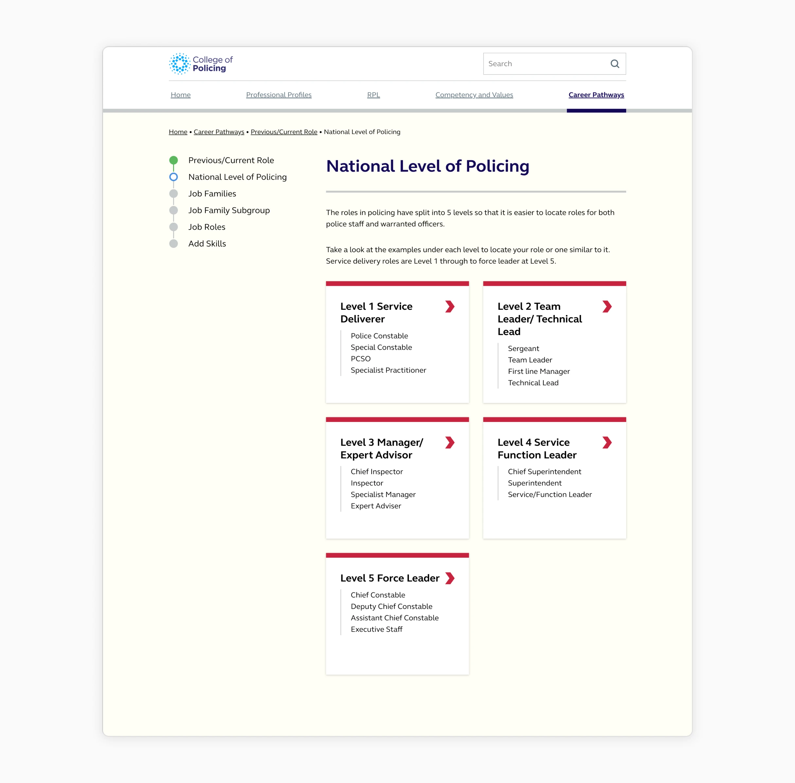
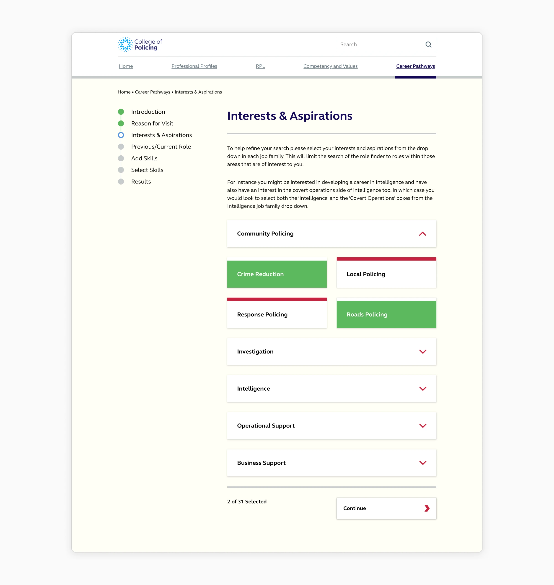
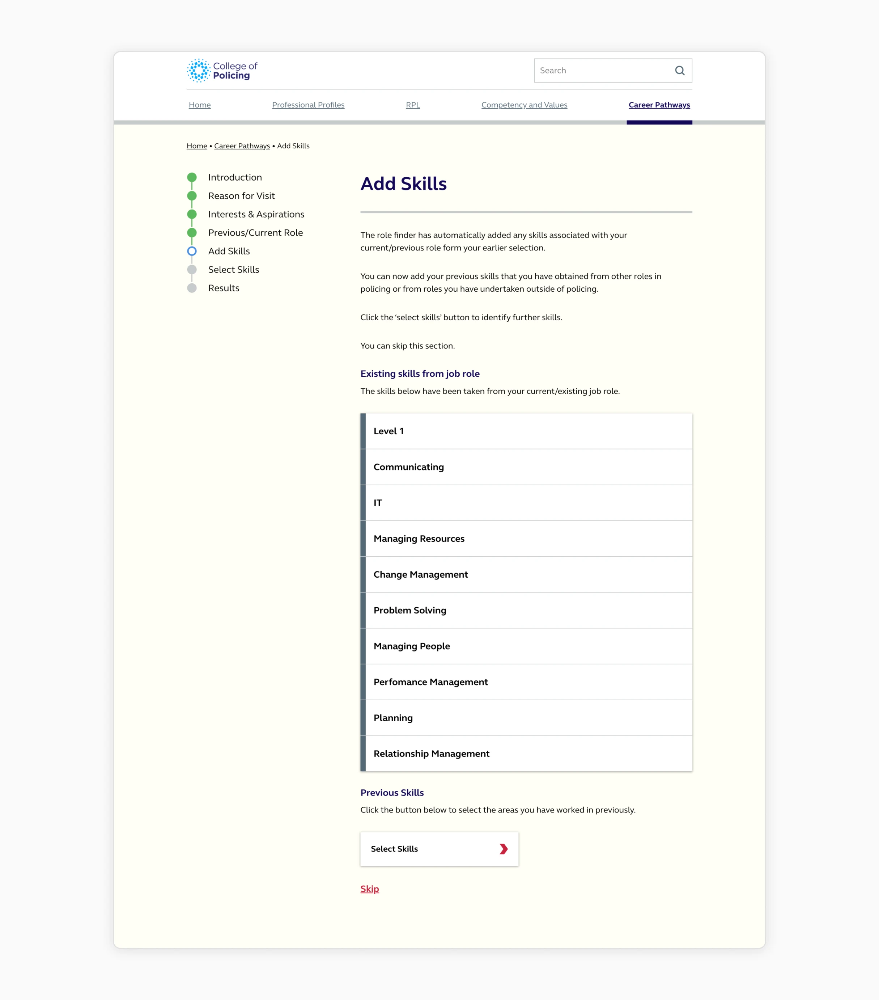
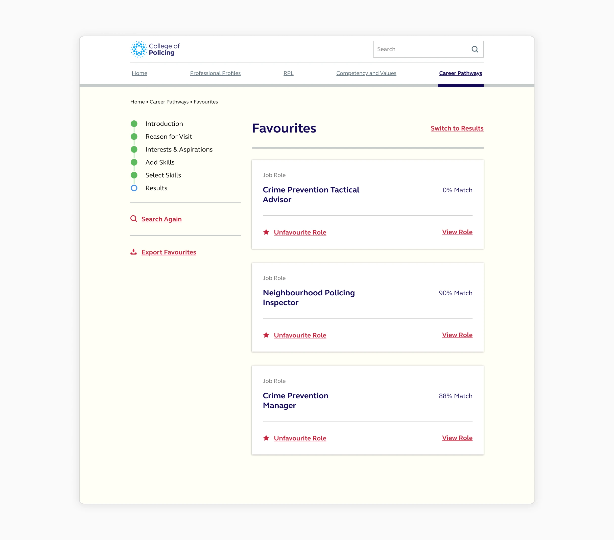

Project overview
The College of Policing needed an online tool to help officers find career advancement opportunities and relevant helpful resources. Whether they wanted to move up the ranks or pivot into a specialist area, the goal was to show them exactly how their current skills matched up with new opportunities.
Discovery
A major part of the discovery phase was a workshop I facilitated with roughly 20 senior ranking officers1. Managing a group of that size and rank was a challenge, but their input was the only way to truly understand the policing landscape. I used that workshop to refine core requirements:
- A way to import skills from your current role
- The ability to add additional personal skills
- A clear path to viewing full job descriptions and resources related to the role

What were the benefits to the force?
We delivered an online tool that fosters career progression and self learning. These valuable resources provide an opportunity for all officers, or those aspiring to join the force, to work towards their dream career.


